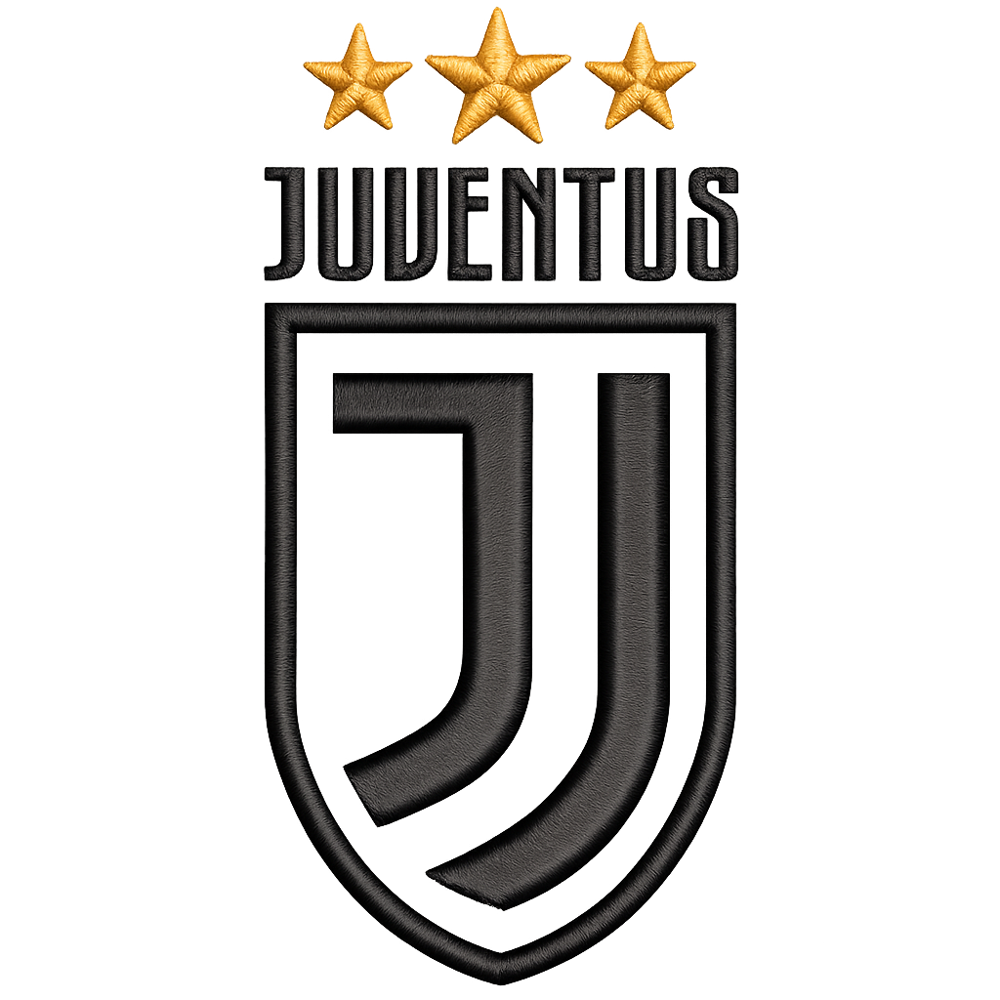
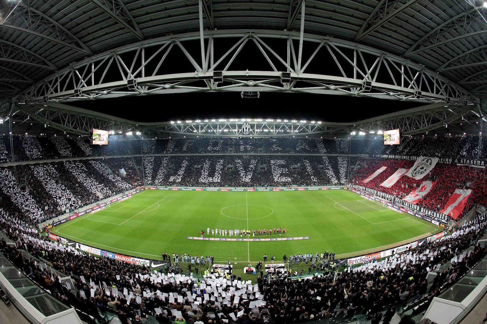
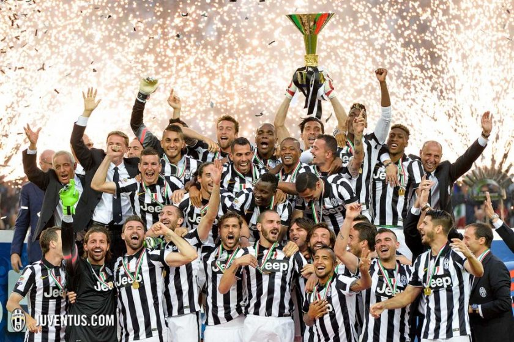
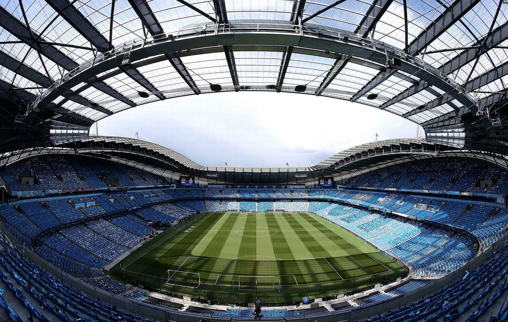
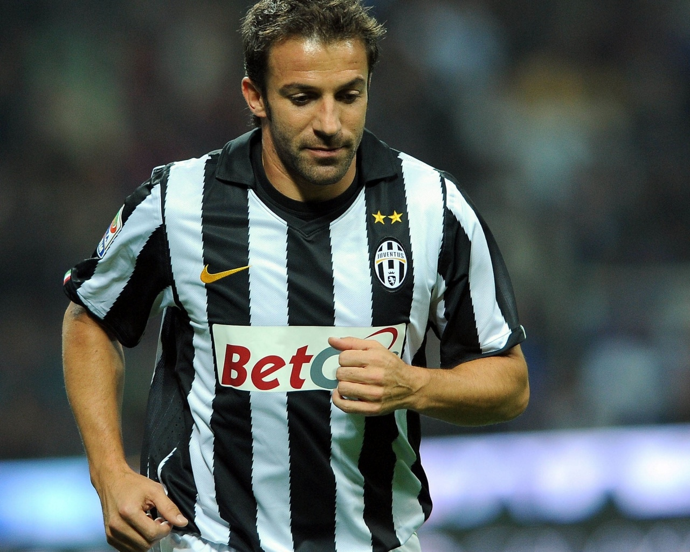
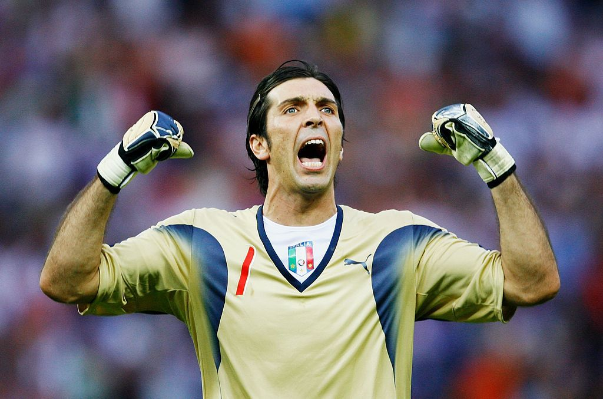
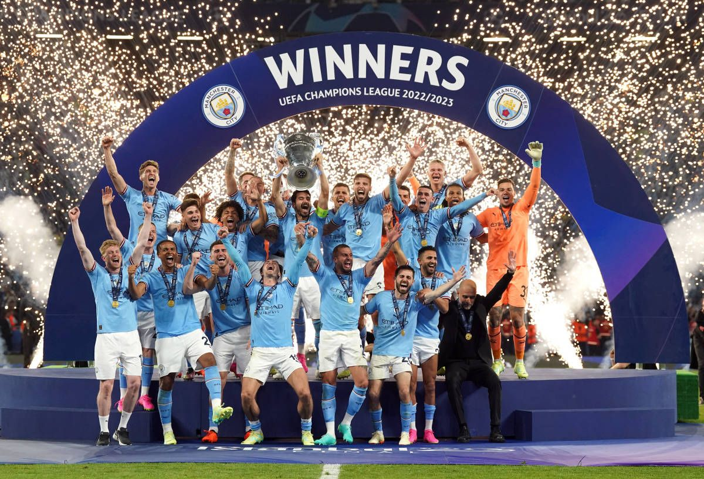
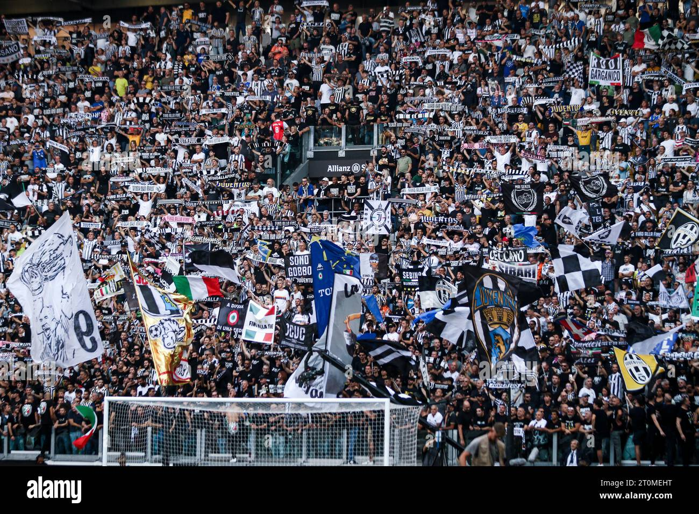
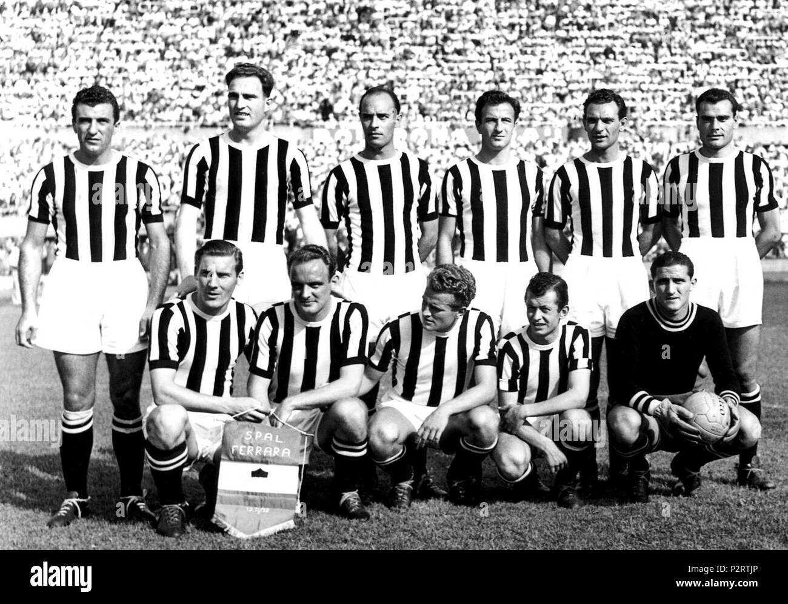
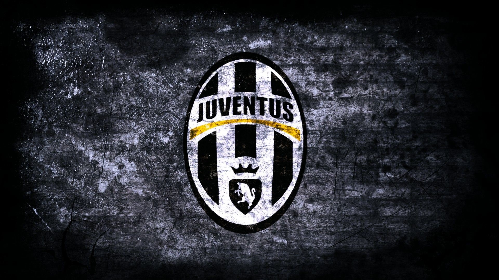

Juventus Football Club was founded in 1897 in Turin, Italy. The club has grown into one of the most successful and respected football clubs in Europe. Juventus is known for its black and white colours, strong winning mentality and loyal supporters around the world.
Over the years, Juventus has won many domestic and international trophies and has been home to some of the greatest players in football history.

Serie A Titles
Coppa Italia
Champions League
Founded
Juventus Football Club was founded in Turin, Italy.
The Agnelli family began its long connection with Juventus.
Juventus won the European Cup and strengthened its international reputation.
Juventus won the UEFA Champions League.
Juventus remains one of the most followed clubs in world football.
One of the greatest Juventus captains and attacking players.
A legendary goalkeeper and symbol of loyalty and leadership.
A creative midfielder who played an important role in Juventus history.
A strong defender known for commitment, passion and leadership.








